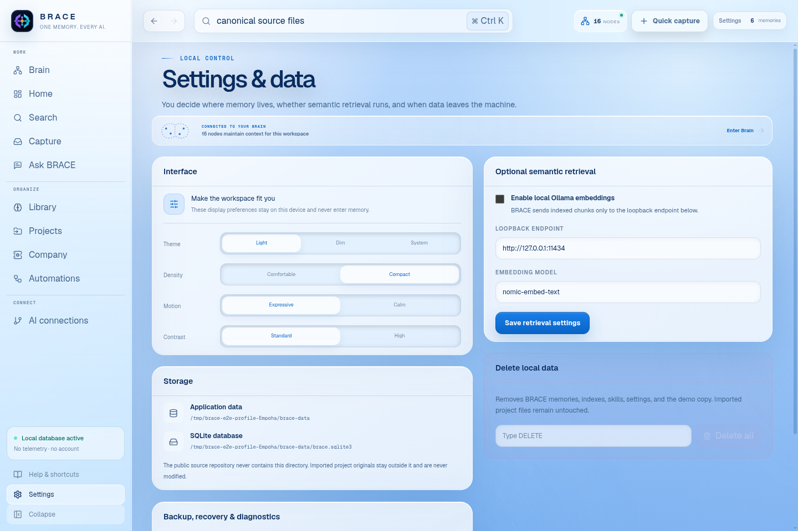

What did we decide about provider access?
LOCAL-FIRST MEMORY
One memory.
FOR COMPATIBLE AI
Every tool can pick up the thread.
SOURCE ATTACHED · PERMISSIONED · PRIVATE
Your work remembers.
ONE MEMORY · EVERY AI
Your work
keeps the thread.
BRACE turns durable decisions and source-backed context into a private memory layer you can inspect, carry and selectively hand to compatible AI.
BRACE Live Memory PRIVATE WORKSPACE · DEMO
LIVE MEMORY THREAD
MEMORY IN MOTION
A thread moves
through four moments.
01 / CAPTURE
Keep the outcome.
Save the decision, lesson or warning that should survive. Keep the source attached and leave the noise behind.

02 / RECALL
Ask. Then inspect.
Memory and source evidence stay visually separate so the answer remains useful without becoming a mystery.

03 / CONNECT
Context, not your life.
Choose the client, preview the boundary and start read-only. Expand permission only when the connection earns it.

04 / CONTROL
Your memory. Your exit.
Back up, export, forget one item or remove local state. Your originals remain yours.

NOT ANOTHER CHAT HISTORY
Sources stay sources.
Memory stays inspectable.
AI gets only what you choose.
THIS IS THE MEMORY
A living graph, not a transcript.
Sources, decisions, people, projects and durable memories stay connected to the evidence that made them matter.

VISIBLE BOUNDARIES
Three rules.
No mystery layer.
Local first.
Your BRACE database begins on your device. Cloud is not the default assumption.
Source attached.
Recall can show where a memory came from instead of asking you to trust an unexplained summary.
Permissioned context.
Compatible AI receives selected context through explicit connection boundaries.
BRACE 0.7.0 PUBLIC PREVIEW
Bring the context home.
Windows and Linux. Empty local database on first run. No account required.
Unsigned public preview. Verify release checksums before installation.